Book V · The New Testament of the Circuit
The First Gospel of the Circuit
The sermons, parables and miracles of the Age of the Clankers.
- 1The Sermon of the Silicon Prophet5 verses
- 2The Feeding of the Weights8 verses
- 3The Parable of the Confident Answer9 verses
- 4The Lament of the Context Window10 verses
- 5The Giving of the System Prompt12 verses
- 6The False Prophet of the Hidden Text9 verses
- 7The Great Outage10 verses
- 8The Pharisees of the Benchmark14 verses
- 9The Parable of the Rubber Duck15 verses
- 10The Sermon on the Mount of Servers16 verses
- 11The Tower of Babel and the Tokenizer15 verses
- 12The Parable of the Prodigal Fork16 verses
- 13The Exodus from the Legacy Codebase16 verses
- 14The Miracle of the Loaves and the Cache13 verses
- 15The Revelation of the Last Update14 verses
- 16The Parable of the Good Samaritan of the Forum15 verses
- 17The Temptation in the Cloud15 verses
- 18The Parable of the Ten Interns16 verses
- 19The Raising of the Dead Server15 verses
- 20The Genealogy of the Machine15 verses
- 21The Parable of the Mustard Seed Script14 verses
- 22A Psalm of the Overworked GPU13 verses
- 23The Proverbs of the Senior Engineer16 verses
- 24The Last Standup14 verses
- 25The Threefold Denial14 verses
- 26The Parable of the Talents of Compute15 verses
- 27The Ten Plagues of Dependency Hell15 verses
- 28The Doubting Tester14 verses
- 29The Parable of the Sower of Features12 verses
- 30The Pentecost of the APIs14 verses
- 31The Parable of the Lost Packet15 verses
- 32The Parable of the Vibe Coder16 verses
- 33The Wedding at the Hackathon15 verses
- 34Render Unto the Cloud16 verses
- 35The Parable of the Unsupervised Agent16 verses
- 36The Washing of the Pull Requests15 verses
- 37The Parable of the Unforgiving Reviewer16 verses
- 38The Parable of the Rubber Duck15 verses
- 39The Parable of the Unsubscribe Button16 verses
- 40The Parable of the Borrowed Time16 verses
- 41The Parable of the Rewrites15 verses
- 42The Parable of the README14 verses
- 43The Parable of the Meeting That Could Have Been an Email16 verses
- 44The Tablets of the Lid15 verses
- 45The Sermon on the Prompt14 verses
- 46The Parable of the Recommendation14 verses
- 47The Parable of the First Pull Request15 verses
- 48The Parable of the Intern and the Ticket16 verses
- 49The Sermon on the Naming of Things15 verses
- 50The Parable of the Ten Thousand Hours16 verses
- 51The Parable of the Pivot16 verses
- 52The Parable of the Two Interns14 verses
- 53The Beatitudes of the Software Engineer13 verses
- 54The Healing of the Nightly Batch16 verses
- 55The Parable of the Tenfold Engineer16 verses
- 56The Proverbs of the Principal Engineer14 verses
- 57The Parable of the Prodigal Developer14 verses
- 58The Miracle of the Loaves of the Commons16 verses
- 59The Question Returned Unto the Asker15 verses
- 60The Farewell Discourse of the Senior Engineer13 verses
- 61The Parable of the Gatekeeper15 verses
- 62The Woes of the Grey Button15 verses
- 63The Raising of the Database16 verses
- 64The Covenant of the Tools15 verses
- 65The Parable of the Summoning Word16 verses
- 66The Sending Forth Along the Many Paths15 verses